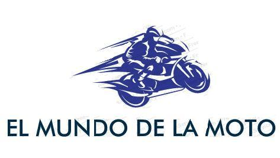

Inicio
Noticias
Ultimas noticias
Videos
Lo mejor
Entevistas
Detras de camara
Equipos
Clasificacion
Pilotos
Calendario
Europa
America
Asia
Historia
MotoGP
Equipos
Contacto
Donde encontrarnos
CONSTRUCTORES- LOS GRANDES NOMBRES
Honda
62 títulos mundiales de constructores, 667 victorias, incluidas todas las categorías.
Yamaha
37 títulos mundiales de constructores, 470 victorias, incluidas todas las categorías.
MV Agusta
37 títulos mundiales de constructores, 275 victorias, incluidas todas las categorías.
Aprilia
18 títulos mundiales de constructores, 274 victorias, incluidas todas las categorías.
Suzuki
15 títulos mundiales de constructores, 155 victorias, incluidas todas las categorías.
Kawasaki
9 títulos mundiales de constructores, 85 victorias, incluidas todas las categorías.
Derbi
8 títulos mundiales de constructores, 93 victorias, incluidas todas las categorías.
Kreidler
7 títulos mundiales de constructores, 71 victorias incluidas todas las categorías.
Moto Guzzi
6 títulos mundiales de constructores, 45 victorias, incluidas todas las categorías.
Garelli
5 títulos mundiales de constructores, 51 victorias, incluidas todas las categorías.
Gilera
5 títulos mundiales de constructores, 59 victorias incluidas todas las categorías.
Mondial
5 títulos mundiales de constructores, 18 victorias incluidas todas las categorías.
Norton
4 títulos mundiales de constructores, 41 victorias, incluidas todas las categorías.
KTM
3 títulos mundiales de constructores, 24 victorias, incluidas todas las categorías.
Harley Davidson
1 título mundial de constructores, 28 victorias, incluidas todas las categorías.
CONSTRUCTORES- LOS GRANDES NOMBRES
Giacomo Agostini
(Italia) 15 títulos mundiales, 122 victorias, incluidas todas las categorías.
Angel Nieto
(España) 13 títulos mundiales, 90 victorias, incluidas todas las categorías.
Mike Hailwood
(GB) 9 títulos mundiales, 76 victorias, incluidas todas las categorías.
Carlo Ubbiali
(Italia) 9 títulos mundiales, 39 victorias, incluidas todas las categorías.
Phil Read
(GB) 7 títulos mundiales, 52 victorias, incluidas todas las categorías.
John Surtees
(GB) 7 títulos mundiales, 38 victorias, incluidas todas las categorías.
Geoffrey Duke
(GB) 6 títulos mundiales, 33 victorias, incluidas todas las categorías.
Mick Doohan
(Australia) 5 títulos mundiales, 54 victorias, incluidas todas las categorías.
Anton Mang
(Alemania) 5 títulos mundiales, 42 victorias, incluidas todas las categorías.
Eddie Lawson
(USA) 4 títulos mundiales, 31 victorias, incluidas todas las categorías.